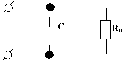
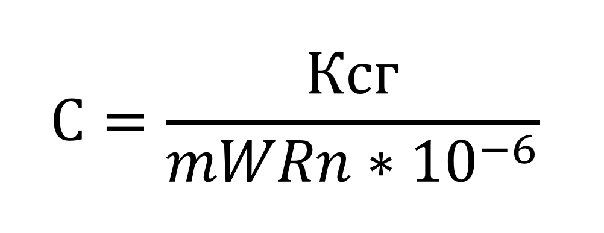
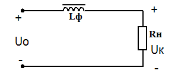
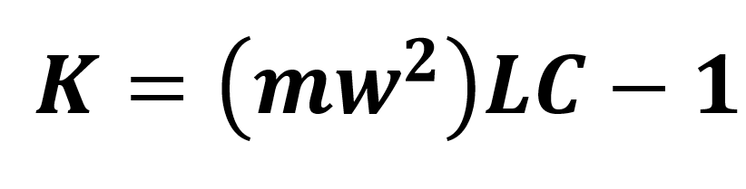
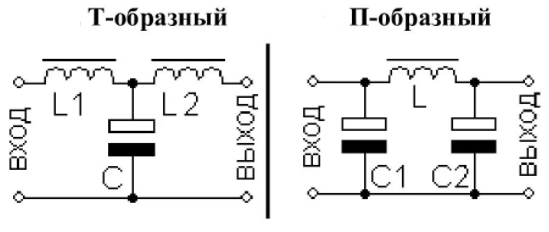

Т.к нагрузка может предъявлять повышенные требования к постоянному питающему
напряжению (коэф.
пульсации 0,01- 0,0001) то после схем выпрямления ставят сглаживающие фильтры. Их
основное назначение
максимально напряжения, сохраняя при этом постоянную составляющую
на нагрузке. Поэтому обычно схемы сглаживающих фильтров содержать только реактивные
составляющие (L и
C) и лишь при очень малых мощностях нагрузки может содержать и активные
сопротивления. Классификация.
Простые фильтры (емкостные, индуктивные);
Сложные фильтры (Г- образные, Т-образные, П-образные, много звеньевые);
Пассивные(C.L.R);
Активные (транзисторные).
Основным параметром является коэффициент сглаживания. К сгл.=Кn вх / вых -
показывает во сколько
раз фильтр ув. пульсации выпрямленного U(I).
Простые сглаживающие фильтры.
Простой емкостной фильтр. Условия фильтра:
емкость вкл-ся параллельно нагрузки;
хс ˂Rн, 1/100˂Rн.
 Конденсатор заряжается до
амплитудного значения
напряжения на входе фильтра в те моменты времени, когда напряжение на входе фильтра
превышает
напряжение на конденсаторе. В остальное время
конденсатор разряжается на нагрузку. m-количество витков
 W- угловая
скорость W=2πf.
На практике для мало мощных потребителей выбирают емкость из условий
Хс=Rн/5÷10, для мощных
Хс=Rн/2÷5.
Простой индуктивный фильтр. Условия фильтра:
включается последовательно нагрузки;
XL>>Rn. WL>>Rn.
 В этом случае основное падение
напряжения переменных
составляющих происходит не на сопротивлении нагрузки, а на индуктивности фильтра.
Для постоянной
составляющей сопротивление индуктивной
катушки близко к нулю. Поскольку индуктивные фильтры обеспечивают лучшее
сглаживание пульсации
при малых сопротивлениях нагрузки, их применяют главным образом в мощных
выпрямителях. Переменная
составляющая вызывает в индуктивности
эдс самоиндукции, препятствующую ее изменению. L=(Kcr * Rн) /(m ω
(Гн) На практике
для маломощной нагрузки XL ≈ (5÷10) Rн; для мощной нагрузки XL ≈
(2÷5) Rн;
Сложные сглаживающие фильтр.
Г- образный фильтр с индуктивным входом. Вид фильтра зависит от характер
нагрузки (у
индуктивного входа броски тока меньше) Хс. Фильтры обеспечивают значительно
более высокий
коэффициент сглаживания пульсации, L и C.


Задача №1 Определить L фильтра выключенного в цепь однофазного выпрямителя
(мостовая схема ).
Ud=60B, Id =5A, Kn на нгузке 0,01 Кнвх= 0,67 L=Rn * Kcr *Wm; RnUd / Id=12 Om; Kcr
= Knвx =
0.67/0.01=67 L=12*67/2Гн
Задача №2 Определить параметры Г- образного фильтра к
двухполуперидному однофазному
выпрямителю, так чтобы Кнвх=0,004 LC=Kcr +1/; Kcr=Кнвх/ Кнвых=0,67/0,004=168
LC=168+1/=0.0017
Задача №3 Определить общий коэффициент сглаживания LC фильтра. Если
L1= 27 мГн
L2=23.5 мГн q=1.6
Задача №4 Определить постоянную составляющую
напряжения емкостного
фильтра однофазного двухполупериодного
выпрямителя на выходе, если R=12Ом C=6.4 Ф Um~вх=4,7 В